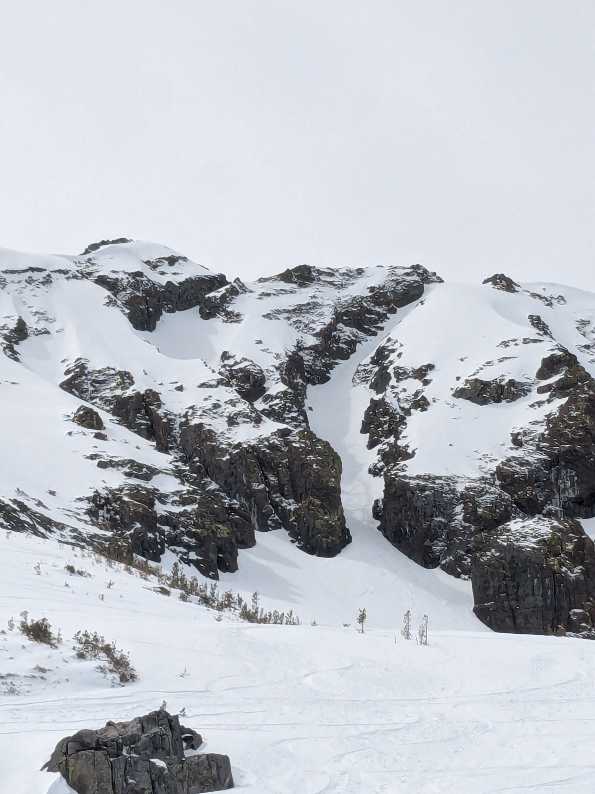
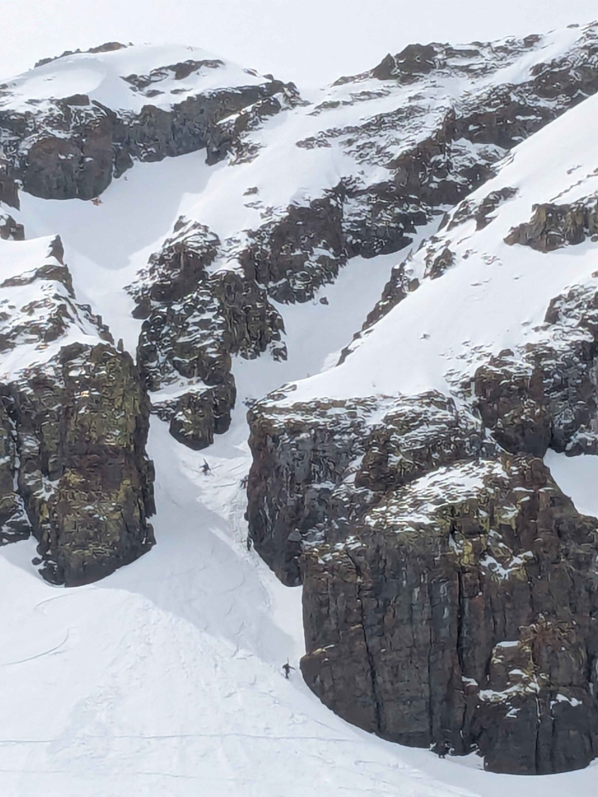
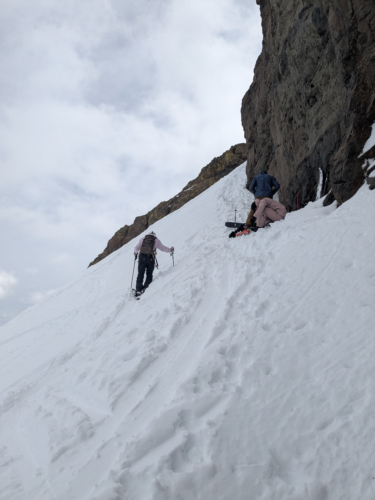
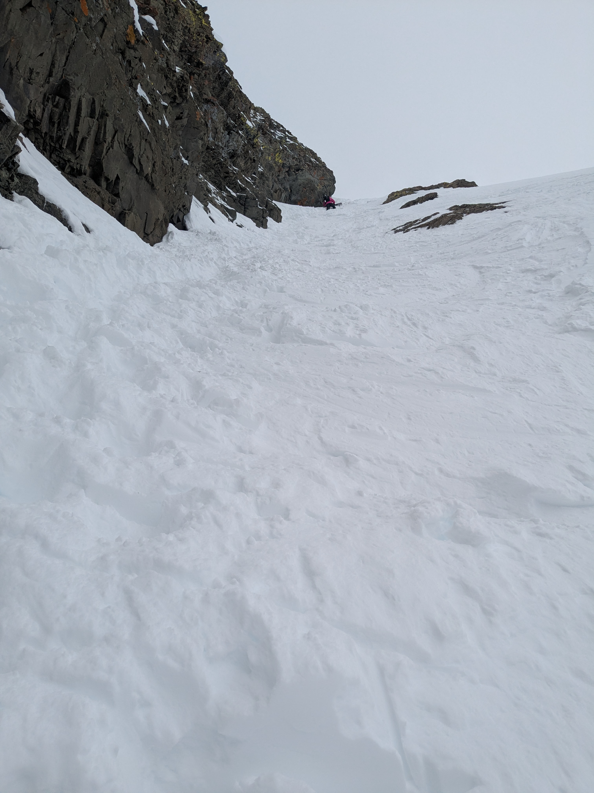
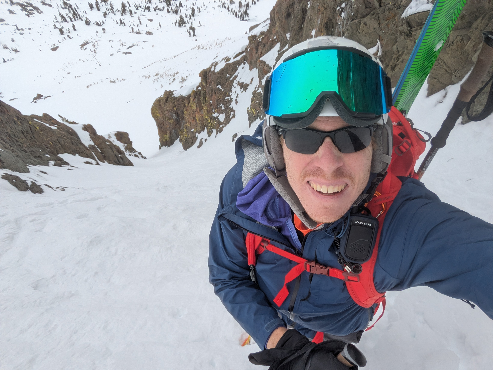
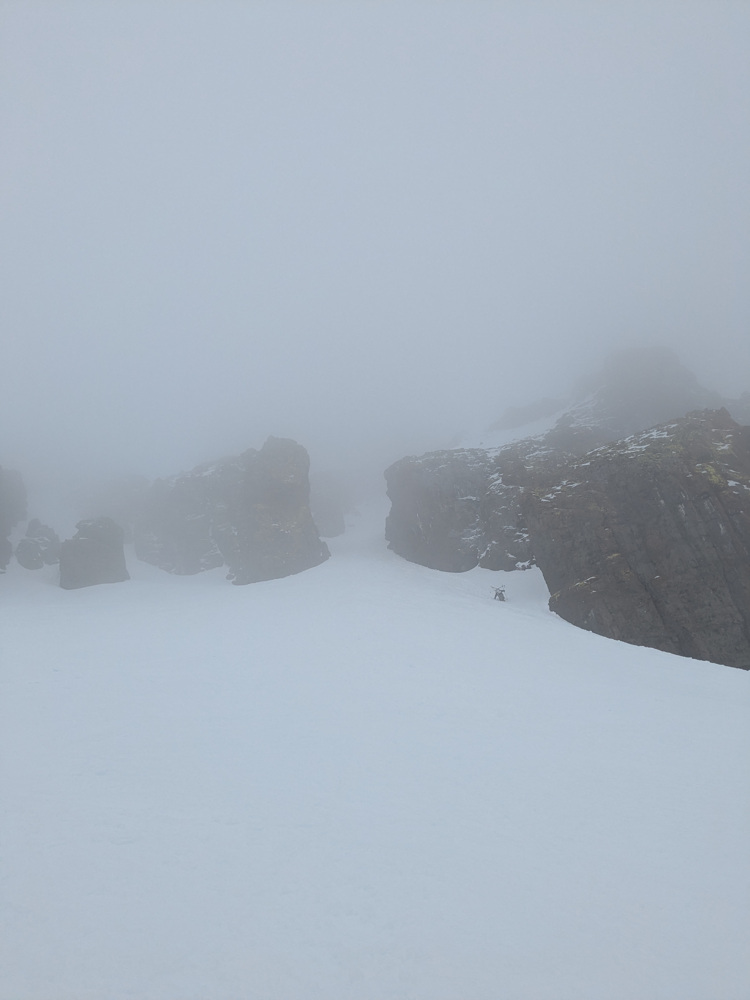

Coworker Cal and I wanted to get some touring in. We were hoping to take advantage of some late season snow to find some good turns. We contemplated going uphill at Kirkwood, which was closed, but ended up settling on Carson Pass. If the conditions were good, I was gunning for the Crescent Moon Couloir, which is one of three couloirs that cut the North Face of Round Top.
In the parking lot we encountered a few other parties who were also cautiously optimistic about the conditions for the couloir, which was encouraging that I wasn't too far off base. The approach up on Carson Pass is always weirdly tricky on skins; I was pretty familiar with the routine by now, but Cal, who was still fairly new to skinning, did not love it.

There were great views of the couloir after the breaking out of the treeline. Some snow faces look incredibly intimidating during the approach only to feel mellow once you get there, but Crescent Moon was the opposite for me. The couloir looks wide and friendly, gradually steepening from the surrounding terrain. It is not messing around once you get into it, however.

The snow quality was pretty iffy during the approach, but we saw several parties start up the couloir, as well as the Hidden Couloir variation, which branches off to the climber's left just after the main entrance. I took that as a sign that conditions must be good. Indeed, the snow below the couloir entrance was much softer, though pretty heavy. But this is California after all.

Parties were taking advantage of a convenient moat off to the climber's right below the couloir in order to stash skis and take a snack break. Cal got to learn all about kick turns in his skins during the final vertical 50 meters, much to my amusement and his frustration.
There was a great bootpack to follow, and I started up. Cal eventually turned around, and I promised to be quick and meet him back at the party moat below. I caught up to a party ahead of me, and took the time to contemplate snow conditions and my timing. The snow got progressively firmer as I climbed, and I was glad to have my crampons on. The last 50 meters of the couloir becomes extremely steep, and I knew that in these conditions I wouldn't be skiing it down, especially with my partner waiting below.

As badly as I wanted to top out and tag the summit, I had already been up to the tippy top some years earlier, and I was there to ski. Topping out just to sideslip or downclimb the top 100 feet made no sense. Plus, visibility appeared to be deteriorating rapidly. I descended a bit until I found a decent spot to put my skis on, and down I went. The snow was heavy and chunky, I was definitely not skiing it well, but at least I was making turns.

I met back up with Cal as the couloir became completely engulfed in fog. He threw his skis on and we continued the descent. It was snowing lightly, and all of the nice snow from earlier had begun to freeze up. Once we had descended a bit more, the snow improved and there were some good low angle turns. My geriatric phone had died by this point, and so my GPS track cuts out.

Cal and I got a bit carried away with the turns and ended up going too far skiers left. We battled our way on a rising traverse on intermittent snow, with postholing galore, eventually ending up at a swampy area just downslope from the Sno-Park. As annoying as it was, I threw on skins for the 30 meters up to the parking lot, which ended up being the right move. Cal opted for booting, and I got to enjoy a parking lot beer, listening to the sounds of swearing and postholing, as I waited.